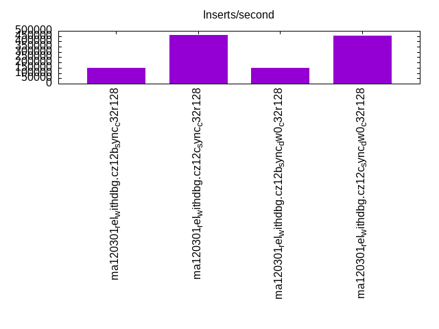
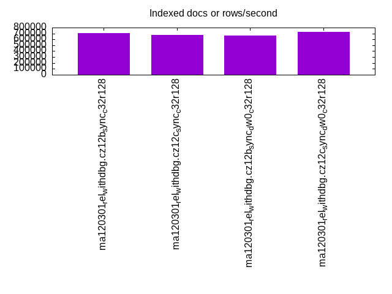
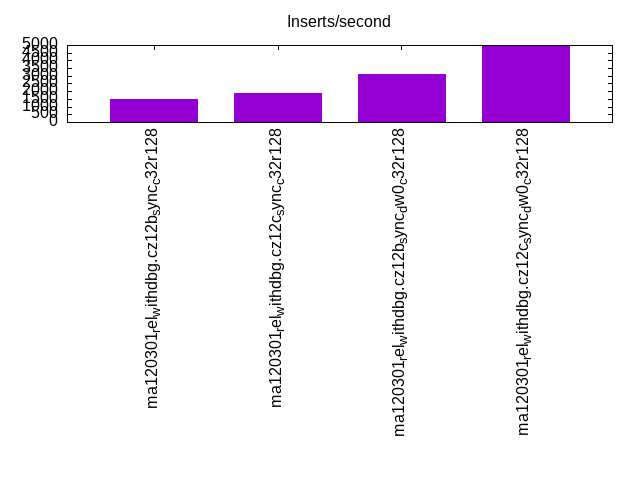
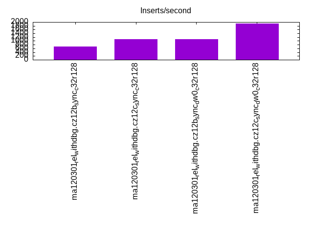
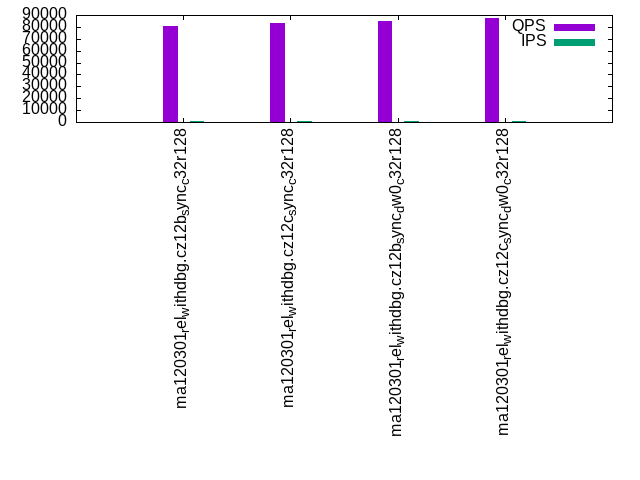
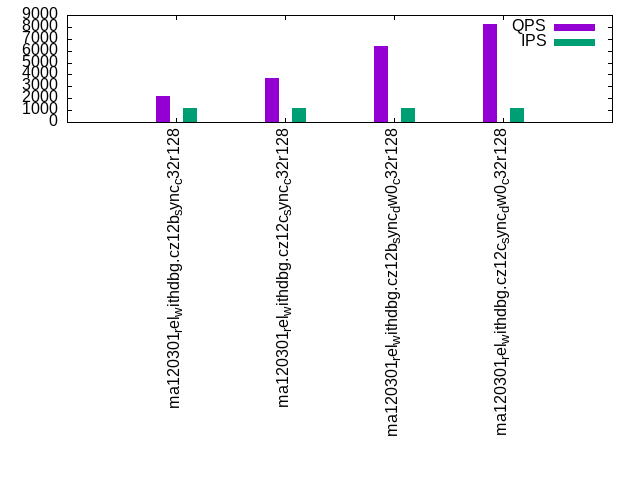
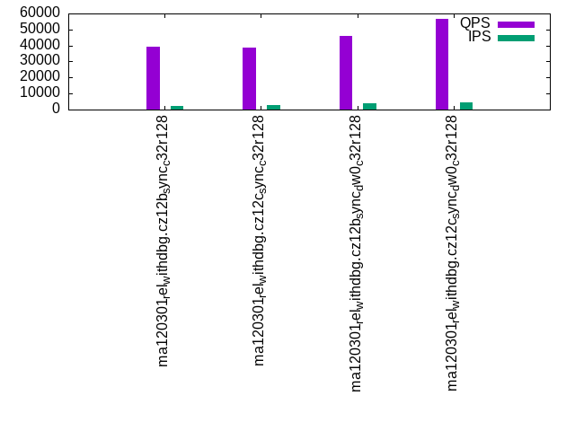
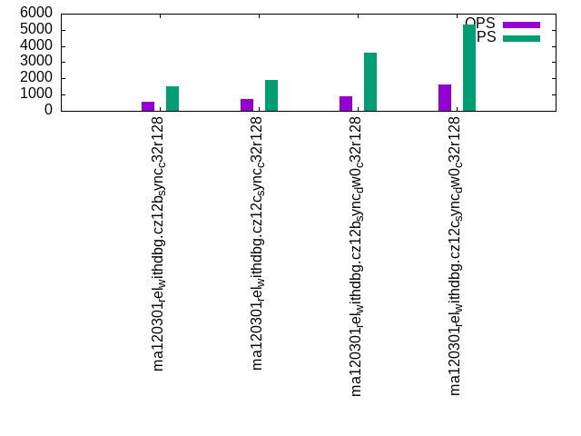
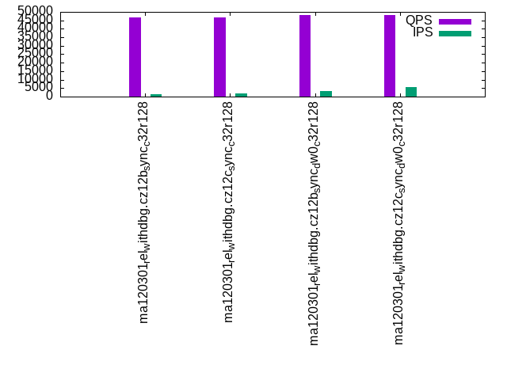
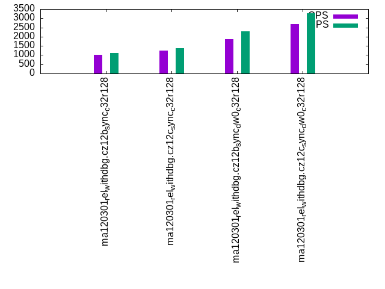

This is a report for the insert benchmark with 3600M docs and 12 client(s). It is generated by scripts (bash, awk, sed) and Tufte might not be impressed. An overview of the insert benchmark is here and a short update is here. Below, by DBMS, I mean DBMS+version.config. An example is my8020.c10b40 where my means MySQL, 8020 is version 8.0.20 and c10b40 is the name for the configuration file.
The test server has 32 cores, 128G RAM and 1 NVMe device. The benchmark was run with 12 clients and there were 1 or 3 connections per client (1 for queries or inserts without rate limits, 1+1 for rate limited inserts+deletes). It uses 8 tables with a table per client. It loads 300M rows per table without secondary indexes, creates 3 secondary indexes per table, then inserts 4m+1m rows per table with a delete per insert to avoid growing the table. It then does 6 read+write tests for 1800s each that do queries as fast as possible with 100,100,500,500,1000,1000 inserts/s and the same for deletes/s per client concurrent with the queries. The database is larger than RAM and most tests are IO-bound except for the range query (qr*) tests that frequently have a cached working set. Clients and the DBMS share one server.
The tested DBMS are:
The numbers are inserts/s for l.i0, l.i1 and l.i2, indexed docs (or rows) /s for l.x and queries/s for qr100, qp100 thru qr1000, qp1000" The values are the average rate over the entire test for inserts (IPS) and queries (QPS). The range of values for IPS and QPS is split into 3 parts: bottom 25%, middle 50%, top 25%. Values in the bottom 25% have a red background, values in the top 25% have a green background and values in the middle have no color. A gray background is used for values that can be ignored because the DBMS did not sustain the target insert rate. Red backgrounds are not used when the minimum value is within 80% of the max value.
| dbms | l.i0 | l.x | l.i1 | l.i2 | qr100 | qp100 | qr500 | qp500 | qr1000 | qp1000 |
|---|---|---|---|---|---|---|---|---|---|---|
| ma120301_rel_withdbg.cz12b_sync_c32r128 | 151064 | 707686 | 1525 | 692 | 80682 | 2188 | 39430 | 572 | 46805 | 1012 |
| ma120301_rel_withdbg.cz12c_sync_c32r128 | 460594 | 678733 | 1858 | 1093 | 83659 | 3733 | 38735 | 744 | 46532 | 1242 |
| ma120301_rel_withdbg.cz12b_sync_dw0_c32r128 | 152523 | 665188 | 3138 | 1103 | 85114 | 6386 | 45711 | 879 | 47967 | 1880 |
| ma120301_rel_withdbg.cz12c_sync_dw0_c32r128 | 454087 | 728745 | 4979 | 1923 | 87164 | 8236 | 56559 | 1640 | 47961 | 2668 |
This table has relative throughput, throughput for the DBMS relative to the DBMS in the first line, using the absolute throughput from the previous table. Values less than 0.95 have a yellow background. Values greater than 1.05 have a blue background.
| dbms | l.i0 | l.x | l.i1 | l.i2 | qr100 | qp100 | qr500 | qp500 | qr1000 | qp1000 |
|---|---|---|---|---|---|---|---|---|---|---|
| ma120301_rel_withdbg.cz12b_sync_c32r128 | 1.00 | 1.00 | 1.00 | 1.00 | 1.00 | 1.00 | 1.00 | 1.00 | 1.00 | 1.00 |
| ma120301_rel_withdbg.cz12c_sync_c32r128 | 3.05 | 0.96 | 1.22 | 1.58 | 1.04 | 1.71 | 0.98 | 1.30 | 0.99 | 1.23 |
| ma120301_rel_withdbg.cz12b_sync_dw0_c32r128 | 1.01 | 0.94 | 2.06 | 1.59 | 1.05 | 2.92 | 1.16 | 1.54 | 1.02 | 1.86 |
| ma120301_rel_withdbg.cz12c_sync_dw0_c32r128 | 3.01 | 1.03 | 3.26 | 2.78 | 1.08 | 3.76 | 1.43 | 2.87 | 1.02 | 2.64 |
This lists the average rate of inserts/s for the tests that do inserts concurrent with queries. For such tests the query rate is listed in the table above. The read+write tests are setup so that the insert rate should match the target rate every second. Cells that are not at least 95% of the target have a red background to indicate a failure to satisfy the target.
| dbms | qr100.L1 | qp100.L2 | qr500.L3 | qp500.L4 | qr1000.L5 | qp1000.L6 |
|---|---|---|---|---|---|---|
| ma120301_rel_withdbg.cz12b_sync_c32r128 | 1193 | 1184 | 2049 | 1502 | 1470 | 1128 |
| ma120301_rel_withdbg.cz12c_sync_c32r128 | 1192 | 1192 | 2794 | 1904 | 1848 | 1363 |
| ma120301_rel_withdbg.cz12b_sync_dw0_c32r128 | 1193 | 1193 | 4127 | 3561 | 3122 | 2293 |
| ma120301_rel_withdbg.cz12c_sync_dw0_c32r128 | 1193 | 1193 | 4613 | 5341 | 5504 | 3264 |
| target | 1200 | 1200 | 6000 | 6000 | 12000 | 12000 |
l.i0: load without secondary indexes. Graphs for performance per 1-second interval are here.
Average throughput:

Insert response time histogram: each cell has the percentage of responses that take <= the time in the header and max is the max response time in seconds. For the max column values in the top 25% of the range have a red background and in the bottom 25% of the range have a green background. The red background is not used when the min value is within 80% of the max value.
| dbms | 256us | 1ms | 4ms | 16ms | 64ms | 256ms | 1s | 4s | 16s | gt | max |
|---|---|---|---|---|---|---|---|---|---|---|---|
| ma120301_rel_withdbg.cz12b_sync_c32r128 | 0.048 | 97.902 | 1.861 | 0.190 | nonzero | 0.302 | |||||
| ma120301_rel_withdbg.cz12c_sync_c32r128 | 98.139 | 0.799 | 1.012 | 0.048 | 0.001 | nonzero | 1.842 | ||||
| ma120301_rel_withdbg.cz12b_sync_dw0_c32r128 | 0.123 | 98.099 | 1.577 | 0.198 | 0.003 | 0.348 | |||||
| ma120301_rel_withdbg.cz12c_sync_dw0_c32r128 | nonzero | 98.179 | 0.794 | 0.980 | 0.046 | 0.001 | 0.753 |
Performance metrics for the DBMS listed above. Some are normalized by throughput, others are not. Legend for results is here.
ips qps rps rmbps wps wmbps rpq rkbpq wpi wkbpi csps cpups cspq cpupq dbgb1 dbgb2 rss maxop p50 p99 tag 151064 0 0 0.0 3823.0 61.9 0.000 0.000 0.025 0.419 45765 7.8 0.303 17 236.8 337.6 101.2 0.302 12399 1899 ma120301_rel_withdbg.cz12b_sync_c32r128 460594 0 1 0.0 4971.5 180.6 0.000 0.000 0.011 0.402 87214 22.8 0.189 16 236.8 338.1 101.2 1.842 46094 2299 ma120301_rel_withdbg.cz12c_sync_c32r128 152523 0 0 0.0 3842.4 62.1 0.000 0.000 0.025 0.417 46251 7.9 0.303 17 236.8 337.6 100.2 0.348 12898 1800 ma120301_rel_withdbg.cz12b_sync_dw0_c32r128 454087 0 1 0.0 4898.1 177.4 0.000 0.000 0.011 0.400 85983 22.5 0.189 16 236.8 338.1 101.2 0.753 46694 2299 ma120301_rel_withdbg.cz12c_sync_dw0_c32r128
Average values from iostat.
r/s rkB/s rrqm/s %rrqm r_await rareq-s w/s wkB/s wrqm/s %wrqm w_await wareq-s d/s dkB/s drqm/s %drqm d_await dareq-s f/s f_await aqu-sz %util 0.233 1.595 0.000 0.000 0.276 2.816 3823.0 63336.4 3524.5 48.01 0.744 16.54 23.58 1029.2 0.000 0.000 0.673 16.45 1262.0 0.678 2.832 97.17 ma120301_rel_withdbg.cz12b_sync_c32r128 0.704 4.874 0.003 0.046 0.478 4.056 4971.5 184957 547.5 7.237 5.022 38.65 1.527 21.42 0.000 0.000 3.284 14.75 1081.5 1.581 9.774 75.94 ma120301_rel_withdbg.cz12c_sync_c32r128 0.262 1.728 0.001 0.016 0.345 3.091 3842.4 63618.3 3546.5 48.04 0.743 16.54 23.59 631.5 0.000 0.000 0.671 10.12 1265.0 0.678 2.803 96.96 ma120301_rel_withdbg.cz12b_sync_dw0_c32r128 0.680 4.722 0.000 0.000 0.545 4.057 4898.1 181707 535.8 7.098 5.533 38.14 1.680 21.53 0.000 0.000 3.422 14.24 1062.2 1.528 10.22 75.73 ma120301_rel_withdbg.cz12c_sync_dw0_c32r128
l.x: create secondary indexes.
Average throughput:

Performance metrics for the DBMS listed above. Some are normalized by throughput, others are not. Legend for results is here.
ips qps rps rmbps wps wmbps rpq rkbpq wpi wkbpi csps cpups cspq cpupq dbgb1 dbgb2 rss maxop p50 p99 tag 707686 0 7955 660.0 8191.3 725.6 0.011 0.955 0.012 1.050 29025 17.0 0.041 8 501.7 602.5 101.5 0.014 NA NA ma120301_rel_withdbg.cz12b_sync_c32r128 678733 0 7605 629.7 7900.4 696.6 0.011 0.950 0.012 1.051 27469 16.7 0.040 8 501.7 603.0 101.5 0.055 NA NA ma120301_rel_withdbg.cz12c_sync_c32r128 665188 0 7422 614.0 7704.6 682.1 0.011 0.945 0.012 1.050 27237 16.3 0.041 8 501.7 602.5 100.5 0.019 NA NA ma120301_rel_withdbg.cz12b_sync_dw0_c32r128 728745 0 8198 679.8 8471.3 747.3 0.011 0.955 0.012 1.050 29880 17.7 0.041 8 501.7 603.0 101.5 0.080 NA NA ma120301_rel_withdbg.cz12c_sync_dw0_c32r128
Average values from iostat.
r/s rkB/s rrqm/s %rrqm r_await rareq-s w/s wkB/s wrqm/s %wrqm w_await wareq-s d/s dkB/s drqm/s %drqm d_await dareq-s f/s f_await aqu-sz %util 7955.3 675879 0.000 0.000 1.710 111.8 8191.3 743045 177.1 1.575 41.08 104.1 7.131 57843.8 0.000 0.000 0.297 192.7 32.20 11.45 227.9 97.46 ma120301_rel_withdbg.cz12b_sync_c32r128 7604.8 644781 0.000 0.000 2.580 108.9 7900.4 713363 165.4 1.871 55.73 101.6 6.240 55874.9 0.000 0.000 0.228 302.5 35.77 19.31 213.0 94.40 ma120301_rel_withdbg.cz12c_sync_c32r128 7422.1 628756 0.000 0.000 3.461 107.4 7704.6 698442 150.8 1.874 67.82 99.10 6.749 54725.2 0.000 0.000 0.196 272.0 28.34 22.12 249.0 94.13 ma120301_rel_withdbg.cz12b_sync_dw0_c32r128 8197.5 696143 0.000 0.000 1.985 109.6 8471.3 765243 174.8 1.573 39.57 103.6 7.033 62732.6 0.000 0.000 0.177 278.7 37.53 15.56 200.8 97.16 ma120301_rel_withdbg.cz12c_sync_dw0_c32r128
l.i1: continue load after secondary indexes created with 50 inserts per transaction. Graphs for performance per 1-second interval are here.
Average throughput:

Insert response time histogram: each cell has the percentage of responses that take <= the time in the header and max is the max response time in seconds. For the max column values in the top 25% of the range have a red background and in the bottom 25% of the range have a green background. The red background is not used when the min value is within 80% of the max value.
| dbms | 256us | 1ms | 4ms | 16ms | 64ms | 256ms | 1s | 4s | 16s | gt | max |
|---|---|---|---|---|---|---|---|---|---|---|---|
| ma120301_rel_withdbg.cz12b_sync_c32r128 | 0.002 | 15.495 | 81.251 | 3.250 | 0.002 | 6.047 | |||||
| ma120301_rel_withdbg.cz12c_sync_c32r128 | 0.050 | 46.015 | 52.955 | 0.979 | 0.002 | 5.313 | |||||
| ma120301_rel_withdbg.cz12b_sync_dw0_c32r128 | nonzero | 0.460 | 81.392 | 18.024 | 0.124 | 3.320 | |||||
| ma120301_rel_withdbg.cz12c_sync_dw0_c32r128 | 0.001 | 20.446 | 69.557 | 9.971 | 0.024 | nonzero | 5.447 |
Delete response time histogram: each cell has the percentage of responses that take <= the time in the header and max is the max response time in seconds. For the max column values in the top 25% of the range have a red background and in the bottom 25% of the range have a green background. The red background is not used when the min value is within 80% of the max value.
| dbms | 256us | 1ms | 4ms | 16ms | 64ms | 256ms | 1s | 4s | 16s | gt | max |
|---|---|---|---|---|---|---|---|---|---|---|---|
| ma120301_rel_withdbg.cz12b_sync_c32r128 | nonzero | 0.926 | 53.638 | 44.070 | 1.364 | 0.002 | 5.583 | ||||
| ma120301_rel_withdbg.cz12c_sync_c32r128 | 0.002 | 0.946 | 64.197 | 34.474 | 0.380 | 0.001 | 5.299 | ||||
| ma120301_rel_withdbg.cz12b_sync_dw0_c32r128 | 0.006 | 4.950 | 81.279 | 13.736 | 0.030 | 2.860 | |||||
| ma120301_rel_withdbg.cz12c_sync_dw0_c32r128 | 0.254 | 51.151 | 39.624 | 8.962 | 0.009 | nonzero | 4.525 |
Performance metrics for the DBMS listed above. Some are normalized by throughput, others are not. Legend for results is here.
ips qps rps rmbps wps wmbps rpq rkbpq wpi wkbpi csps cpups cspq cpupq dbgb1 dbgb2 rss maxop p50 p99 tag 1525 0 7988 124.8 8608.2 212.5 5.239 83.824 5.645 142.726 108597 3.5 71.220 735 645.8 748.2 101.3 6.047 150 0 ma120301_rel_withdbg.cz12b_sync_c32r128 1858 0 9818 153.4 10234.8 258.8 5.285 84.554 5.509 142.629 135446 4.1 72.903 706 647.3 750.1 101.3 5.313 150 50 ma120301_rel_withdbg.cz12c_sync_c32r128 3138 0 16272 254.3 15288.0 251.7 5.186 82.979 4.873 82.142 158687 5.7 50.576 581 643.2 745.4 100.3 3.320 300 50 ma120301_rel_withdbg.cz12b_sync_dw0_c32r128 4979 0 26375 412.1 23859.8 398.7 5.297 84.751 4.792 81.990 253655 8.8 50.943 566 646.4 749.1 101.3 5.447 400 100 ma120301_rel_withdbg.cz12c_sync_dw0_c32r128
Average values from iostat.
r/s rkB/s rrqm/s %rrqm r_await rareq-s w/s wkB/s wrqm/s %wrqm w_await wareq-s d/s dkB/s drqm/s %drqm d_await dareq-s f/s f_await aqu-sz %util 7988.5 127815 0.000 0.000 1.349 16.00 8608.2 217628 695.4 7.263 1.403 25.29 0.006 0.088 0.000 0.000 0.162 0.436 781.8 1.733 19.86 98.65 ma120301_rel_withdbg.cz12b_sync_c32r128 9818.3 157093 0.000 0.000 1.086 16.00 10234.8 264990 469.3 4.089 1.026 25.91 0.368 151.0 0.000 0.000 3.839 344.4 832.2 1.235 18.22 97.89 ma120301_rel_withdbg.cz12c_sync_c32r128 16272.3 260356 0.000 0.000 1.374 16.00 15288.0 257728 915.1 5.599 9.298 16.85 0.091 35.06 0.000 0.000 0.566 19.24 369.5 2.661 128.0 99.73 ma120301_rel_withdbg.cz12b_sync_dw0_c32r128 26374.6 421993 0.000 0.000 0.734 16.00 23859.8 408243 248.1 0.990 6.882 17.12 4.398 1509.9 0.000 0.000 2.839 246.3 250.6 2.426 150.7 99.06 ma120301_rel_withdbg.cz12c_sync_dw0_c32r128
l.i2: continue load after secondary indexes created with 5 inserts per transaction. Graphs for performance per 1-second interval are here.
Average throughput:

Insert response time histogram: each cell has the percentage of responses that take <= the time in the header and max is the max response time in seconds. For the max column values in the top 25% of the range have a red background and in the bottom 25% of the range have a green background. The red background is not used when the min value is within 80% of the max value.
| dbms | 256us | 1ms | 4ms | 16ms | 64ms | 256ms | 1s | 4s | 16s | gt | max |
|---|---|---|---|---|---|---|---|---|---|---|---|
| ma120301_rel_withdbg.cz12b_sync_c32r128 | 0.086 | 44.625 | 54.634 | 0.655 | nonzero | 1.039 | |||||
| ma120301_rel_withdbg.cz12c_sync_c32r128 | nonzero | 6.456 | 63.041 | 30.451 | 0.052 | nonzero | 1.123 | ||||
| ma120301_rel_withdbg.cz12b_sync_dw0_c32r128 | 1.858 | 68.360 | 29.641 | 0.139 | 0.001 | 1.969 | |||||
| ma120301_rel_withdbg.cz12c_sync_dw0_c32r128 | 0.003 | 24.690 | 64.886 | 10.400 | 0.021 | nonzero | 1.023 |
Delete response time histogram: each cell has the percentage of responses that take <= the time in the header and max is the max response time in seconds. For the max column values in the top 25% of the range have a red background and in the bottom 25% of the range have a green background. The red background is not used when the min value is within 80% of the max value.
| dbms | 256us | 1ms | 4ms | 16ms | 64ms | 256ms | 1s | 4s | 16s | gt | max |
|---|---|---|---|---|---|---|---|---|---|---|---|
| ma120301_rel_withdbg.cz12b_sync_c32r128 | 0.193 | 49.344 | 50.089 | 0.374 | nonzero | 1.051 | |||||
| ma120301_rel_withdbg.cz12c_sync_c32r128 | 0.001 | 11.061 | 60.203 | 28.694 | 0.041 | nonzero | 1.036 | ||||
| ma120301_rel_withdbg.cz12b_sync_dw0_c32r128 | 2.504 | 69.666 | 27.727 | 0.102 | 0.001 | 1.880 | |||||
| ma120301_rel_withdbg.cz12c_sync_dw0_c32r128 | 0.011 | 42.413 | 48.962 | 8.599 | 0.016 | 0.861 |
Performance metrics for the DBMS listed above. Some are normalized by throughput, others are not. Legend for results is here.
ips qps rps rmbps wps wmbps rpq rkbpq wpi wkbpi csps cpups cspq cpupq dbgb1 dbgb2 rss maxop p50 p99 tag 692 0 5587 87.3 5888.7 138.1 8.078 129.248 8.515 204.444 64544 2.3 93.326 1064 645.8 748.2 101.3 1.039 45 20 ma120301_rel_withdbg.cz12b_sync_c32r128 1093 0 8761 136.9 8535.3 212.3 8.018 128.294 7.812 199.005 102250 3.6 93.584 1054 647.3 750.1 101.3 1.123 65 30 ma120301_rel_withdbg.cz12c_sync_c32r128 1103 0 8800 137.5 7791.5 119.5 7.980 127.686 7.066 111.001 87613 3.4 79.453 987 643.2 745.4 100.3 1.969 70 25 ma120301_rel_withdbg.cz12b_sync_dw0_c32r128 1923 0 15031 234.9 12303.4 198.0 7.817 125.080 6.399 105.433 141321 5.5 73.501 915 646.4 749.1 101.3 1.023 120 45 ma120301_rel_withdbg.cz12c_sync_dw0_c32r128
Average values from iostat.
r/s rkB/s rrqm/s %rrqm r_await rareq-s w/s wkB/s wrqm/s %wrqm w_await wareq-s d/s dkB/s drqm/s %drqm d_await dareq-s f/s f_await aqu-sz %util 5586.8 89388.1 0.000 0.000 1.923 16.00 5888.7 141394 428.4 6.873 2.679 24.00 0.003 0.013 0.000 0.000 0.092 0.063 727.9 2.545 24.16 99.86 ma120301_rel_withdbg.cz12b_sync_c32r128 8760.9 140174 0.000 0.000 1.304 16.00 8535.3 217433 3.506 0.043 1.662 25.48 0.147 1.162 0.000 0.000 1.967 3.276 871.3 1.811 21.59 99.52 ma120301_rel_withdbg.cz12c_sync_c32r128 8800.0 140799 0.000 0.000 1.592 16.00 7791.5 122401 631.7 7.538 7.505 15.68 0.003 0.039 0.000 0.000 0.075 0.193 490.2 2.347 60.15 99.85 ma120301_rel_withdbg.cz12b_sync_dw0_c32r128 15030.7 240491 0.000 0.000 1.151 16.00 12303.4 202716 33.61 0.274 4.267 16.47 1.797 7.204 0.000 0.000 1.607 1.657 427.2 2.190 56.38 99.57 ma120301_rel_withdbg.cz12c_sync_dw0_c32r128
qr100.L1: range queries with 100 insert/s per client. Graphs for performance per 1-second interval are here.
Average throughput:

Query response time histogram: each cell has the percentage of responses that take <= the time in the header and max is the max response time in seconds. For max values in the top 25% of the range have a red background and in the bottom 25% of the range have a green background. The red background is not used when the min value is within 80% of the max value.
| dbms | 256us | 1ms | 4ms | 16ms | 64ms | 256ms | 1s | 4s | 16s | gt | max |
|---|---|---|---|---|---|---|---|---|---|---|---|
| ma120301_rel_withdbg.cz12b_sync_c32r128 | 99.257 | 0.517 | 0.179 | 0.028 | 0.017 | 0.002 | nonzero | 0.437 | |||
| ma120301_rel_withdbg.cz12c_sync_c32r128 | 99.376 | 0.481 | 0.117 | 0.019 | 0.007 | 0.001 | nonzero | 0.422 | |||
| ma120301_rel_withdbg.cz12b_sync_dw0_c32r128 | 99.396 | 0.466 | 0.125 | 0.007 | 0.006 | nonzero | nonzero | nonzero | 1.321 | ||
| ma120301_rel_withdbg.cz12c_sync_dw0_c32r128 | 99.514 | 0.413 | 0.069 | 0.002 | 0.001 | nonzero | nonzero | 0.272 |
Insert response time histogram: each cell has the percentage of responses that take <= the time in the header and max is the max response time in seconds. For max values in the top 25% of the range have a red background and in the bottom 25% of the range have a green background. The red background is not used when the min value is within 80% of the max value.
| dbms | 256us | 1ms | 4ms | 16ms | 64ms | 256ms | 1s | 4s | 16s | gt | max |
|---|---|---|---|---|---|---|---|---|---|---|---|
| ma120301_rel_withdbg.cz12b_sync_c32r128 | 0.028 | 68.970 | 22.162 | 8.558 | 0.282 | 1.549 | |||||
| ma120301_rel_withdbg.cz12c_sync_c32r128 | 3.146 | 81.204 | 12.799 | 2.801 | 0.051 | 1.236 | |||||
| ma120301_rel_withdbg.cz12b_sync_dw0_c32r128 | 0.130 | 86.275 | 11.609 | 1.787 | 0.199 | 1.928 | |||||
| ma120301_rel_withdbg.cz12c_sync_dw0_c32r128 | 8.319 | 85.475 | 5.924 | 0.282 | 0.746 |
Delete response time histogram: each cell has the percentage of responses that take <= the time in the header and max is the max response time in seconds. For max values in the top 25% of the range have a red background and in the bottom 25% of the range have a green background. The red background is not used when the min value is within 80% of the max value.
| dbms | 256us | 1ms | 4ms | 16ms | 64ms | 256ms | 1s | 4s | 16s | gt | max |
|---|---|---|---|---|---|---|---|---|---|---|---|
| ma120301_rel_withdbg.cz12b_sync_c32r128 | 1.704 | 78.595 | 12.532 | 7.097 | 0.072 | 1.353 | |||||
| ma120301_rel_withdbg.cz12c_sync_c32r128 | 12.690 | 73.451 | 11.590 | 2.264 | 0.005 | 1.109 | |||||
| ma120301_rel_withdbg.cz12b_sync_dw0_c32r128 | 2.833 | 88.148 | 7.824 | 1.028 | 0.167 | 1.871 | |||||
| ma120301_rel_withdbg.cz12c_sync_dw0_c32r128 | 19.954 | 75.405 | 4.481 | 0.160 | 0.689 |
Performance metrics for the DBMS listed above. Some are normalized by throughput, others are not. Legend for results is here.
ips qps rps rmbps wps wmbps rpq rkbpq wpi wkbpi csps cpups cspq cpupq dbgb1 dbgb2 rss maxop p50 p99 tag 1193 80682 5462 85.3 3278.9 82.9 0.068 1.083 2.749 71.133 502261 38.5 6.225 153 645.8 748.2 101.3 0.437 7279 1216 ma120301_rel_withdbg.cz12b_sync_c32r128 1192 83659 5433 84.9 3121.9 82.1 0.065 1.039 2.619 70.543 517438 39.7 6.185 152 647.3 750.1 101.3 0.422 7327 2000 ma120301_rel_withdbg.cz12c_sync_c32r128 1193 85114 5491 85.8 2757.8 46.1 0.065 1.032 2.312 39.606 525023 40.2 6.168 151 643.2 745.4 100.3 1.321 7327 3104 ma120301_rel_withdbg.cz12b_sync_dw0_c32r128 1193 87164 5419 84.7 2610.2 45.2 0.062 0.995 2.188 38.796 535773 40.7 6.147 149 646.4 749.1 101.3 0.272 7407 4879 ma120301_rel_withdbg.cz12c_sync_dw0_c32r128
Average values from iostat.
r/s rkB/s rrqm/s %rrqm r_await rareq-s w/s wkB/s wrqm/s %wrqm w_await wareq-s d/s dkB/s drqm/s %drqm d_await dareq-s f/s f_await aqu-sz %util 5461.7 87387.3 0.000 0.000 0.662 16.00 3278.9 84840.5 208.8 12.32 0.689 25.96 0.007 0.080 0.000 0.000 0.108 0.398 339.7 1.004 5.724 37.86 ma120301_rel_withdbg.cz12b_sync_c32r128 5433.4 86933.7 0.000 0.000 0.419 16.00 3121.9 84087.4 9.272 1.408 0.451 30.19 0.007 0.119 0.000 0.000 0.084 0.530 274.3 0.800 3.700 32.41 ma120301_rel_withdbg.cz12c_sync_c32r128 5490.8 87853.4 0.000 0.000 0.475 16.00 2757.8 47238.1 212.5 12.78 2.772 18.49 0.007 0.088 0.000 0.000 0.094 0.365 133.0 1.020 12.92 23.85 ma120301_rel_withdbg.cz12b_sync_dw0_c32r128 5419.3 86708.4 0.000 0.000 0.236 16.00 2610.2 46271.6 10.40 1.646 1.108 22.29 0.003 0.020 0.000 0.000 0.014 0.061 64.81 0.778 5.433 17.06 ma120301_rel_withdbg.cz12c_sync_dw0_c32r128
qp100.L2: point queries with 100 insert/s per client. Graphs for performance per 1-second interval are here.
Average throughput:

Query response time histogram: each cell has the percentage of responses that take <= the time in the header and max is the max response time in seconds. For max values in the top 25% of the range have a red background and in the bottom 25% of the range have a green background. The red background is not used when the min value is within 80% of the max value.
| dbms | 256us | 1ms | 4ms | 16ms | 64ms | 256ms | 1s | 4s | 16s | gt | max |
|---|---|---|---|---|---|---|---|---|---|---|---|
| ma120301_rel_withdbg.cz12b_sync_c32r128 | 0.001 | 10.698 | 42.917 | 42.520 | 3.427 | 0.430 | 0.006 | 0.001 | 1.853 | ||
| ma120301_rel_withdbg.cz12c_sync_c32r128 | 0.002 | 21.865 | 50.737 | 25.730 | 1.584 | 0.079 | 0.002 | nonzero | 1.008 | ||
| ma120301_rel_withdbg.cz12b_sync_dw0_c32r128 | 0.004 | 38.945 | 52.819 | 7.699 | 0.494 | 0.039 | nonzero | 0.424 | |||
| ma120301_rel_withdbg.cz12c_sync_dw0_c32r128 | 0.005 | 44.027 | 51.296 | 4.474 | 0.185 | 0.011 | nonzero | 0.785 |
Insert response time histogram: each cell has the percentage of responses that take <= the time in the header and max is the max response time in seconds. For max values in the top 25% of the range have a red background and in the bottom 25% of the range have a green background. The red background is not used when the min value is within 80% of the max value.
| dbms | 256us | 1ms | 4ms | 16ms | 64ms | 256ms | 1s | 4s | 16s | gt | max |
|---|---|---|---|---|---|---|---|---|---|---|---|
| ma120301_rel_withdbg.cz12b_sync_c32r128 | 16.863 | 66.569 | 15.148 | 1.419 | 2.829 | ||||||
| ma120301_rel_withdbg.cz12c_sync_c32r128 | 0.014 | 46.822 | 46.542 | 6.296 | 0.326 | 1.638 | |||||
| ma120301_rel_withdbg.cz12b_sync_dw0_c32r128 | 0.005 | 7.690 | 86.213 | 5.708 | 0.384 | 1.632 | |||||
| ma120301_rel_withdbg.cz12c_sync_dw0_c32r128 | 0.007 | 40.088 | 56.613 | 3.188 | 0.104 | 2.029 |
Delete response time histogram: each cell has the percentage of responses that take <= the time in the header and max is the max response time in seconds. For max values in the top 25% of the range have a red background and in the bottom 25% of the range have a green background. The red background is not used when the min value is within 80% of the max value.
| dbms | 256us | 1ms | 4ms | 16ms | 64ms | 256ms | 1s | 4s | 16s | gt | max |
|---|---|---|---|---|---|---|---|---|---|---|---|
| ma120301_rel_withdbg.cz12b_sync_c32r128 | 0.037 | 26.556 | 57.792 | 14.810 | 0.806 | 2.758 | |||||
| ma120301_rel_withdbg.cz12c_sync_c32r128 | 1.435 | 61.854 | 31.424 | 5.176 | 0.111 | 1.346 | |||||
| ma120301_rel_withdbg.cz12b_sync_dw0_c32r128 | 0.049 | 16.926 | 77.468 | 5.373 | 0.185 | 1.343 | |||||
| ma120301_rel_withdbg.cz12c_sync_dw0_c32r128 | 0.382 | 66.183 | 30.954 | 2.440 | 0.042 | 1.894 |
Performance metrics for the DBMS listed above. Some are normalized by throughput, others are not. Legend for results is here.
ips qps rps rmbps wps wmbps rpq rkbpq wpi wkbpi csps cpups cspq cpupq dbgb1 dbgb2 rss maxop p50 p99 tag 1184 2188 22684 354.4 8506.1 212.9 10.368 165.892 7.187 184.250 128374 5.1 58.677 746 645.8 748.2 101.3 1.853 144 0 ma120301_rel_withdbg.cz12b_sync_c32r128 1192 3733 32606 509.5 8710.3 223.9 8.735 139.758 7.307 192.375 155193 6.4 41.575 549 647.3 750.1 101.3 1.008 304 16 ma120301_rel_withdbg.cz12c_sync_c32r128 1193 6386 49166 768.2 7952.0 125.5 7.699 123.189 6.667 107.708 198812 8.5 31.134 426 643.2 745.4 100.3 0.424 592 16 ma120301_rel_withdbg.cz12b_sync_dw0_c32r128 1193 8236 60293 942.1 7885.7 125.8 7.321 117.129 6.612 108.007 231685 10.1 28.130 392 646.4 749.1 101.3 0.785 752 48 ma120301_rel_withdbg.cz12c_sync_dw0_c32r128
Average values from iostat.
r/s rkB/s rrqm/s %rrqm r_await rareq-s w/s wkB/s wrqm/s %wrqm w_await wareq-s d/s dkB/s drqm/s %drqm d_await dareq-s f/s f_await aqu-sz %util 22683.6 362938 0.000 0.000 1.001 16.00 8506.1 218060 269.3 3.480 1.433 25.67 0.010 0.112 0.000 0.000 0.159 0.460 672.4 1.825 25.09 99.40 ma120301_rel_withdbg.cz12b_sync_c32r128 32606.4 521702 0.000 0.000 0.560 16.00 8710.3 229311 29.66 0.404 0.853 26.46 0.006 0.057 0.000 0.000 0.091 0.243 567.7 1.422 20.03 99.43 ma120301_rel_withdbg.cz12c_sync_c32r128 49165.5 786648 0.000 0.000 0.509 16.00 7952.0 128464 231.4 3.568 2.243 16.22 0.007 0.049 0.000 0.000 0.095 0.169 224.7 1.847 30.28 99.25 ma120301_rel_withdbg.cz12b_sync_dw0_c32r128 60293.0 964688 0.000 0.000 0.271 16.00 7885.7 128820 20.58 0.327 2.327 16.44 0.006 0.049 0.000 0.000 0.099 0.243 172.5 1.421 32.42 98.96 ma120301_rel_withdbg.cz12c_sync_dw0_c32r128
qr500.L3: range queries with 500 insert/s per client. Graphs for performance per 1-second interval are here.
Average throughput:

Query response time histogram: each cell has the percentage of responses that take <= the time in the header and max is the max response time in seconds. For max values in the top 25% of the range have a red background and in the bottom 25% of the range have a green background. The red background is not used when the min value is within 80% of the max value.
| dbms | 256us | 1ms | 4ms | 16ms | 64ms | 256ms | 1s | 4s | 16s | gt | max |
|---|---|---|---|---|---|---|---|---|---|---|---|
| ma120301_rel_withdbg.cz12b_sync_c32r128 | 94.386 | 3.516 | 1.407 | 0.449 | 0.227 | 0.015 | nonzero | nonzero | 1.231 | ||
| ma120301_rel_withdbg.cz12c_sync_c32r128 | 93.787 | 3.934 | 1.510 | 0.564 | 0.194 | 0.011 | nonzero | 0.622 | |||
| ma120301_rel_withdbg.cz12b_sync_dw0_c32r128 | 92.541 | 4.026 | 3.024 | 0.353 | 0.053 | 0.002 | nonzero | 0.824 | |||
| ma120301_rel_withdbg.cz12c_sync_dw0_c32r128 | 96.772 | 2.485 | 0.562 | 0.086 | 0.083 | 0.010 | 0.003 | nonzero | 2.000 |
Insert response time histogram: each cell has the percentage of responses that take <= the time in the header and max is the max response time in seconds. For max values in the top 25% of the range have a red background and in the bottom 25% of the range have a green background. The red background is not used when the min value is within 80% of the max value.
| dbms | 256us | 1ms | 4ms | 16ms | 64ms | 256ms | 1s | 4s | 16s | gt | max |
|---|---|---|---|---|---|---|---|---|---|---|---|
| ma120301_rel_withdbg.cz12b_sync_c32r128 | 0.139 | 52.126 | 47.139 | 0.596 | 1.897 | ||||||
| ma120301_rel_withdbg.cz12c_sync_c32r128 | 0.001 | 1.660 | 81.969 | 16.284 | 0.086 | 1.554 | |||||
| ma120301_rel_withdbg.cz12b_sync_dw0_c32r128 | 0.027 | 14.721 | 79.832 | 5.310 | 0.111 | 1.996 | |||||
| ma120301_rel_withdbg.cz12c_sync_dw0_c32r128 | 11.962 | 68.603 | 14.960 | 3.063 | 1.412 | nonzero | 4.073 |
Delete response time histogram: each cell has the percentage of responses that take <= the time in the header and max is the max response time in seconds. For max values in the top 25% of the range have a red background and in the bottom 25% of the range have a green background. The red background is not used when the min value is within 80% of the max value.
| dbms | 256us | 1ms | 4ms | 16ms | 64ms | 256ms | 1s | 4s | 16s | gt | max |
|---|---|---|---|---|---|---|---|---|---|---|---|
| ma120301_rel_withdbg.cz12b_sync_c32r128 | 0.804 | 73.884 | 25.111 | 0.201 | 1.734 | ||||||
| ma120301_rel_withdbg.cz12c_sync_c32r128 | 0.019 | 2.144 | 85.635 | 12.169 | 0.033 | 1.449 | |||||
| ma120301_rel_withdbg.cz12b_sync_dw0_c32r128 | 0.292 | 16.174 | 79.824 | 3.667 | 0.044 | 1.544 | |||||
| ma120301_rel_withdbg.cz12c_sync_dw0_c32r128 | 25.250 | 58.443 | 11.755 | 3.282 | 1.271 | 3.597 |
Performance metrics for the DBMS listed above. Some are normalized by throughput, others are not. Legend for results is here.
ips qps rps rmbps wps wmbps rpq rkbpq wpi wkbpi csps cpups cspq cpupq dbgb1 dbgb2 rss maxop p50 p99 tag 2049 39430 7912 123.6 8058.6 197.7 0.201 3.211 3.932 98.803 351522 25.9 8.915 210 645.8 748.2 101.3 1.231 3280 336 ma120301_rel_withdbg.cz12b_sync_c32r128 2794 38735 10718 167.5 10315.1 261.8 0.277 4.427 3.691 95.933 393332 27.3 10.155 226 647.3 750.1 101.3 0.622 3232 688 ma120301_rel_withdbg.cz12c_sync_c32r128 4127 45711 17066 266.7 14102.7 225.2 0.373 5.974 3.417 55.874 406957 32.5 8.903 228 643.2 745.4 100.4 0.824 3936 384 ma120301_rel_withdbg.cz12b_sync_dw0_c32r128 4613 56559 19761 308.8 15199.9 252.8 0.349 5.590 3.295 56.102 500933 35.9 8.857 203 646.4 749.1 101.3 2.000 5679 64 ma120301_rel_withdbg.cz12c_sync_dw0_c32r128
Average values from iostat.
r/s rkB/s rrqm/s %rrqm r_await rareq-s w/s wkB/s wrqm/s %wrqm w_await wareq-s d/s dkB/s drqm/s %drqm d_await dareq-s f/s f_await aqu-sz %util 7912.1 126594 0.000 0.000 1.466 16.00 8058.6 202477 415.6 4.923 1.509 25.13 0.005 0.021 0.000 0.000 0.120 0.093 814.1 1.842 21.05 98.66 ma120301_rel_withdbg.cz12b_sync_c32r128 10717.6 171481 0.000 0.000 1.130 16.00 10315.1 268065 7.110 0.073 1.141 26.01 0.187 1.278 0.000 0.000 1.943 2.947 909.9 1.281 20.54 97.55 ma120301_rel_withdbg.cz12c_sync_c32r128 17066.5 273065 0.000 0.000 1.621 16.00 14102.7 230581 773.4 5.651 11.30 16.39 0.015 0.101 0.000 0.000 0.264 0.299 437.9 2.525 152.3 99.85 ma120301_rel_withdbg.cz12b_sync_dw0_c32r128 19760.8 316172 0.000 0.000 2.075 16.00 15199.9 258822 21.87 0.171 42.94 17.02 0.951 7.258 0.000 0.000 2.974 2.946 201.1 6.084 379.3 84.87 ma120301_rel_withdbg.cz12c_sync_dw0_c32r128
qp500.L4: point queries with 500 insert/s per client. Graphs for performance per 1-second interval are here.
Average throughput:

Query response time histogram: each cell has the percentage of responses that take <= the time in the header and max is the max response time in seconds. For max values in the top 25% of the range have a red background and in the bottom 25% of the range have a green background. The red background is not used when the min value is within 80% of the max value.
| dbms | 256us | 1ms | 4ms | 16ms | 64ms | 256ms | 1s | 4s | 16s | gt | max |
|---|---|---|---|---|---|---|---|---|---|---|---|
| ma120301_rel_withdbg.cz12b_sync_c32r128 | 0.036 | 3.646 | 47.070 | 45.852 | 3.384 | 0.012 | nonzero | 1.010 | |||
| ma120301_rel_withdbg.cz12c_sync_c32r128 | nonzero | 0.048 | 4.635 | 59.091 | 34.011 | 2.209 | 0.006 | 0.744 | |||
| ma120301_rel_withdbg.cz12b_sync_dw0_c32r128 | 0.010 | 10.583 | 59.922 | 28.800 | 0.673 | 0.011 | nonzero | 1.370 | |||
| ma120301_rel_withdbg.cz12c_sync_dw0_c32r128 | 0.039 | 30.729 | 64.806 | 4.174 | 0.246 | 0.006 | 0.702 |
Insert response time histogram: each cell has the percentage of responses that take <= the time in the header and max is the max response time in seconds. For max values in the top 25% of the range have a red background and in the bottom 25% of the range have a green background. The red background is not used when the min value is within 80% of the max value.
| dbms | 256us | 1ms | 4ms | 16ms | 64ms | 256ms | 1s | 4s | 16s | gt | max |
|---|---|---|---|---|---|---|---|---|---|---|---|
| ma120301_rel_withdbg.cz12b_sync_c32r128 | 18.134 | 78.848 | 3.019 | 2.737 | |||||||
| ma120301_rel_withdbg.cz12c_sync_c32r128 | 0.004 | 57.488 | 41.662 | 0.846 | 2.446 | ||||||
| ma120301_rel_withdbg.cz12b_sync_dw0_c32r128 | 0.001 | 5.019 | 86.201 | 8.711 | 0.068 | 2.928 | |||||
| ma120301_rel_withdbg.cz12c_sync_dw0_c32r128 | 0.044 | 32.049 | 64.654 | 3.232 | 0.020 | 1.818 |
Delete response time histogram: each cell has the percentage of responses that take <= the time in the header and max is the max response time in seconds. For max values in the top 25% of the range have a red background and in the bottom 25% of the range have a green background. The red background is not used when the min value is within 80% of the max value.
| dbms | 256us | 1ms | 4ms | 16ms | 64ms | 256ms | 1s | 4s | 16s | gt | max |
|---|---|---|---|---|---|---|---|---|---|---|---|
| ma120301_rel_withdbg.cz12b_sync_c32r128 | 0.001 | 37.749 | 60.318 | 1.933 | 2.167 | ||||||
| ma120301_rel_withdbg.cz12c_sync_c32r128 | 0.013 | 60.605 | 38.881 | 0.501 | 1.953 | ||||||
| ma120301_rel_withdbg.cz12b_sync_dw0_c32r128 | 8.731 | 84.409 | 6.830 | 0.031 | 2.658 | ||||||
| ma120301_rel_withdbg.cz12c_sync_dw0_c32r128 | 0.113 | 47.213 | 49.905 | 2.753 | 0.015 | 1.722 |
Performance metrics for the DBMS listed above. Some are normalized by throughput, others are not. Legend for results is here.
ips qps rps rmbps wps wmbps rpq rkbpq wpi wkbpi csps cpups cspq cpupq dbgb1 dbgb2 rss maxop p50 p99 tag 1502 572 12022 187.8 8280.2 203.3 21.000 335.994 5.511 138.586 139625 4.2 243.886 2348 645.9 748.3 101.3 1.010 32 0 ma120301_rel_withdbg.cz12b_sync_c32r128 1904 744 15429 241.1 10208.2 257.3 20.750 331.993 5.361 138.391 177041 5.0 238.086 2152 647.3 750.2 101.3 0.744 48 16 ma120301_rel_withdbg.cz12c_sync_c32r128 3561 879 22907 357.9 15114.9 235.9 26.058 416.924 4.245 67.827 154419 6.5 175.656 2366 643.2 745.4 100.4 1.370 64 16 ma120301_rel_withdbg.cz12b_sync_dw0_c32r128 5341 1640 38347 599.2 21920.7 351.7 23.383 374.121 4.104 67.420 259832 10.4 158.434 2029 646.4 749.1 101.3 0.702 144 16 ma120301_rel_withdbg.cz12c_sync_dw0_c32r128
Average values from iostat.
r/s rkB/s rrqm/s %rrqm r_await rareq-s w/s wkB/s wrqm/s %wrqm w_await wareq-s d/s dkB/s drqm/s %drqm d_await dareq-s f/s f_await aqu-sz %util 12022.3 192357 0.000 0.000 1.366 16.00 8280.2 208226 327.6 3.831 1.332 25.14 0.005 0.022 0.000 0.000 0.144 0.090 800.8 1.744 24.49 98.99 ma120301_rel_withdbg.cz12b_sync_c32r128 15429.4 246870 0.000 0.000 1.189 16.00 10208.2 263497 7.111 0.072 1.188 25.81 0.161 0.658 0.000 0.000 1.809 1.526 888.4 1.251 26.48 98.46 ma120301_rel_withdbg.cz12c_sync_c32r128 22907.3 366518 0.000 0.000 1.745 16.00 15114.9 241520 660.8 4.220 12.92 15.97 0.012 0.086 0.000 0.000 0.372 0.329 402.5 2.897 197.9 99.88 ma120301_rel_withdbg.cz12b_sync_dw0_c32r128 38347.4 613558 0.000 0.000 0.996 16.00 21920.7 360102 56.37 0.271 8.804 16.43 1.813 7.299 0.000 0.000 1.140 1.111 294.4 2.834 145.0 99.52 ma120301_rel_withdbg.cz12c_sync_dw0_c32r128
qr1000.L5: range queries with 1000 insert/s per client. Graphs for performance per 1-second interval are here.
Average throughput:

Query response time histogram: each cell has the percentage of responses that take <= the time in the header and max is the max response time in seconds. For max values in the top 25% of the range have a red background and in the bottom 25% of the range have a green background. The red background is not used when the min value is within 80% of the max value.
| dbms | 256us | 1ms | 4ms | 16ms | 64ms | 256ms | 1s | 4s | 16s | gt | max |
|---|---|---|---|---|---|---|---|---|---|---|---|
| ma120301_rel_withdbg.cz12b_sync_c32r128 | 93.607 | 4.322 | 1.673 | 0.305 | 0.089 | 0.003 | nonzero | nonzero | 3.833 | ||
| ma120301_rel_withdbg.cz12c_sync_c32r128 | 92.952 | 5.083 | 1.529 | 0.355 | 0.079 | 0.002 | nonzero | nonzero | 3.683 | ||
| ma120301_rel_withdbg.cz12b_sync_dw0_c32r128 | 91.436 | 5.748 | 2.575 | 0.201 | 0.038 | 0.002 | nonzero | 0.793 | |||
| ma120301_rel_withdbg.cz12c_sync_dw0_c32r128 | 90.223 | 7.037 | 2.547 | 0.161 | 0.031 | 0.001 | nonzero | 0.887 |
Insert response time histogram: each cell has the percentage of responses that take <= the time in the header and max is the max response time in seconds. For max values in the top 25% of the range have a red background and in the bottom 25% of the range have a green background. The red background is not used when the min value is within 80% of the max value.
| dbms | 256us | 1ms | 4ms | 16ms | 64ms | 256ms | 1s | 4s | 16s | gt | max |
|---|---|---|---|---|---|---|---|---|---|---|---|
| ma120301_rel_withdbg.cz12b_sync_c32r128 | 0.010 | 22.200 | 75.038 | 2.744 | 0.009 | 5.304 | |||||
| ma120301_rel_withdbg.cz12c_sync_c32r128 | 0.012 | 45.356 | 53.931 | 0.688 | 0.013 | 5.511 | |||||
| ma120301_rel_withdbg.cz12b_sync_dw0_c32r128 | 5.108 | 70.553 | 24.145 | 0.194 | 2.572 | ||||||
| ma120301_rel_withdbg.cz12c_sync_dw0_c32r128 | 0.003 | 30.212 | 60.471 | 9.307 | 0.007 | 2.422 |
Delete response time histogram: each cell has the percentage of responses that take <= the time in the header and max is the max response time in seconds. For max values in the top 25% of the range have a red background and in the bottom 25% of the range have a green background. The red background is not used when the min value is within 80% of the max value.
| dbms | 256us | 1ms | 4ms | 16ms | 64ms | 256ms | 1s | 4s | 16s | gt | max |
|---|---|---|---|---|---|---|---|---|---|---|---|
| ma120301_rel_withdbg.cz12b_sync_c32r128 | 0.013 | 32.722 | 65.875 | 1.385 | 0.006 | 5.138 | |||||
| ma120301_rel_withdbg.cz12c_sync_c32r128 | 0.058 | 46.737 | 52.792 | 0.401 | 0.012 | 5.457 | |||||
| ma120301_rel_withdbg.cz12b_sync_dw0_c32r128 | 8.040 | 70.078 | 21.756 | 0.125 | 2.414 | ||||||
| ma120301_rel_withdbg.cz12c_sync_dw0_c32r128 | 0.003 | 43.261 | 47.804 | 8.926 | 0.006 | 1.720 |
Performance metrics for the DBMS listed above. Some are normalized by throughput, others are not. Legend for results is here.
ips qps rps rmbps wps wmbps rpq rkbpq wpi wkbpi csps cpups cspq cpupq dbgb1 dbgb2 rss maxop p50 p99 tag 1470 46805 8671 135.5 8479.4 210.7 0.185 2.964 5.766 146.706 375010 31.4 8.012 215 645.9 748.3 101.3 3.833 4079 1520 ma120301_rel_withdbg.cz12b_sync_c32r128 1848 46532 10843 169.4 10283.1 261.8 0.233 3.728 5.564 145.050 401211 32.7 8.622 225 647.4 750.3 101.3 3.683 4095 1504 ma120301_rel_withdbg.cz12c_sync_c32r128 3122 47967 17727 277.0 15356.5 243.6 0.370 5.913 4.919 79.897 430620 36.2 8.977 241 643.3 745.5 100.3 0.793 4207 608 ma120301_rel_withdbg.cz12b_sync_dw0_c32r128 5504 47961 26224 409.7 23000.9 369.7 0.547 8.748 4.179 68.769 495493 40.1 10.331 268 646.5 749.2 101.3 0.887 4079 560 ma120301_rel_withdbg.cz12c_sync_dw0_c32r128
Average values from iostat.
r/s rkB/s rrqm/s %rrqm r_await rareq-s w/s wkB/s wrqm/s %wrqm w_await wareq-s d/s dkB/s drqm/s %drqm d_await dareq-s f/s f_await aqu-sz %util 8670.9 138735 0.000 0.000 1.276 16.00 8479.4 215731 333.8 3.843 1.262 25.43 0.005 0.040 0.000 0.000 0.102 0.174 816.3 1.669 18.94 98.92 ma120301_rel_withdbg.cz12b_sync_c32r128 10843.1 173489 0.000 0.000 1.008 16.00 10283.1 268080 4.975 0.050 0.935 26.07 0.272 1.129 0.000 0.000 2.974 2.485 895.5 1.227 17.62 98.29 ma120301_rel_withdbg.cz12c_sync_c32r128 17727.4 283639 0.000 0.000 1.227 16.00 15356.5 249424 603.4 3.798 9.838 16.24 0.009 0.135 0.000 0.000 0.245 0.650 345.1 2.629 135.4 99.51 ma120301_rel_withdbg.cz12b_sync_dw0_c32r128 26223.5 419576 0.000 0.000 0.766 16.00 23000.9 378540 46.58 0.207 6.580 16.46 4.210 32.06 0.000 0.000 2.257 5.012 255.5 2.387 150.4 99.24 ma120301_rel_withdbg.cz12c_sync_dw0_c32r128
qp1000.L6: point queries with 1000 insert/s per client. Graphs for performance per 1-second interval are here.
Average throughput:

Query response time histogram: each cell has the percentage of responses that take <= the time in the header and max is the max response time in seconds. For max values in the top 25% of the range have a red background and in the bottom 25% of the range have a green background. The red background is not used when the min value is within 80% of the max value.
| dbms | 256us | 1ms | 4ms | 16ms | 64ms | 256ms | 1s | 4s | 16s | gt | max |
|---|---|---|---|---|---|---|---|---|---|---|---|
| ma120301_rel_withdbg.cz12b_sync_c32r128 | nonzero | 0.109 | 7.496 | 72.751 | 19.068 | 0.574 | 0.001 | nonzero | 3.970 | ||
| ma120301_rel_withdbg.cz12c_sync_c32r128 | nonzero | 0.124 | 8.739 | 81.705 | 9.324 | 0.107 | 0.001 | nonzero | 1.392 | ||
| ma120301_rel_withdbg.cz12b_sync_dw0_c32r128 | nonzero | 1.584 | 52.720 | 37.619 | 7.965 | 0.111 | 0.001 | 0.707 | |||
| ma120301_rel_withdbg.cz12c_sync_dw0_c32r128 | nonzero | 1.742 | 57.259 | 38.911 | 2.055 | 0.031 | 0.002 | nonzero | 1.351 |
Insert response time histogram: each cell has the percentage of responses that take <= the time in the header and max is the max response time in seconds. For max values in the top 25% of the range have a red background and in the bottom 25% of the range have a green background. The red background is not used when the min value is within 80% of the max value.
| dbms | 256us | 1ms | 4ms | 16ms | 64ms | 256ms | 1s | 4s | 16s | gt | max |
|---|---|---|---|---|---|---|---|---|---|---|---|
| ma120301_rel_withdbg.cz12b_sync_c32r128 | 0.002 | 0.081 | 92.322 | 7.590 | 0.006 | 4.942 | |||||
| ma120301_rel_withdbg.cz12c_sync_c32r128 | 0.005 | 3.540 | 95.604 | 0.851 | 2.291 | ||||||
| ma120301_rel_withdbg.cz12b_sync_dw0_c32r128 | 0.196 | 56.656 | 42.928 | 0.220 | 2.021 | ||||||
| ma120301_rel_withdbg.cz12c_sync_dw0_c32r128 | 0.008 | 1.987 | 65.666 | 32.287 | 0.053 | 2.712 |
Delete response time histogram: each cell has the percentage of responses that take <= the time in the header and max is the max response time in seconds. For max values in the top 25% of the range have a red background and in the bottom 25% of the range have a green background. The red background is not used when the min value is within 80% of the max value.
| dbms | 256us | 1ms | 4ms | 16ms | 64ms | 256ms | 1s | 4s | 16s | gt | max |
|---|---|---|---|---|---|---|---|---|---|---|---|
| ma120301_rel_withdbg.cz12b_sync_c32r128 | 0.003 | 0.183 | 94.835 | 4.974 | 0.005 | 4.884 | |||||
| ma120301_rel_withdbg.cz12c_sync_c32r128 | 0.011 | 3.645 | 95.984 | 0.361 | 2.135 | ||||||
| ma120301_rel_withdbg.cz12b_sync_dw0_c32r128 | 0.922 | 57.380 | 41.547 | 0.151 | 1.877 | ||||||
| ma120301_rel_withdbg.cz12c_sync_dw0_c32r128 | 0.014 | 6.865 | 61.331 | 31.747 | 0.043 | 2.681 |
Performance metrics for the DBMS listed above. Some are normalized by throughput, others are not. Legend for results is here.
ips qps rps rmbps wps wmbps rpq rkbpq wpi wkbpi csps cpups cspq cpupq dbgb1 dbgb2 rss maxop p50 p99 tag 1128 1012 16108 251.7 8163.4 202.7 15.910 254.567 7.236 184.017 130505 4.5 128.907 1422 645.9 748.6 101.3 3.970 96 32 ma120301_rel_withdbg.cz12b_sync_c32r128 1363 1242 19675 307.4 9645.8 244.8 15.848 253.567 7.078 183.957 155565 5.0 125.304 1289 647.4 750.5 101.3 1.392 128 32 ma120301_rel_withdbg.cz12c_sync_c32r128 2293 1880 31496 492.1 13703.4 214.9 16.750 268.008 5.976 95.973 184972 7.0 98.374 1191 643.4 745.6 100.4 0.707 144 32 ma120301_rel_withdbg.cz12b_sync_dw0_c32r128 3264 2668 44817 700.3 19031.5 303.6 16.797 268.758 5.830 95.226 262714 9.9 98.465 1187 646.6 749.3 101.3 1.351 224 64 ma120301_rel_withdbg.cz12c_sync_dw0_c32r128
Average values from iostat.
r/s rkB/s rrqm/s %rrqm r_await rareq-s w/s wkB/s wrqm/s %wrqm w_await wareq-s d/s dkB/s drqm/s %drqm d_await dareq-s f/s f_await aqu-sz %util 16107.7 257723 0.000 0.000 1.217 16.00 8163.4 207589 274.6 3.314 1.155 25.42 0.003 0.016 0.000 0.000 0.088 0.079 768.1 1.700 25.73 99.41 ma120301_rel_withdbg.cz12b_sync_c32r128 19675.2 314804 0.000 0.000 1.035 16.00 9645.8 250678 6.462 0.069 0.931 25.99 0.236 2.133 0.000 0.000 2.642 5.168 831.5 1.285 25.82 99.13 ma120301_rel_withdbg.cz12c_sync_c32r128 31495.9 503935 0.000 0.000 1.003 16.00 13703.4 220086 466.6 3.334 5.258 16.05 0.007 0.050 0.000 0.000 0.197 0.242 350.4 2.571 90.48 99.75 ma120301_rel_withdbg.cz12b_sync_dw0_c32r128 44817.1 717073 0.000 0.000 0.620 16.00 19031.5 310845 74.15 0.395 4.860 16.33 5.157 20.66 0.000 0.000 2.146 2.073 282.0 2.057 105.1 99.55 ma120301_rel_withdbg.cz12c_sync_dw0_c32r128
l.i0: load without secondary indexes
Performance metrics for all DBMS, not just the ones listed above. Some are normalized by throughput, others are not. Legend for results is here.
ips qps rps rmbps wps wmbps rpq rkbpq wpi wkbpi csps cpups cspq cpupq dbgb1 dbgb2 rss maxop p50 p99 tag 151064 0 0 0.0 3823.0 61.9 0.000 0.000 0.025 0.419 45765 7.8 0.303 17 236.8 337.6 101.2 0.302 12399 1899 ma120301_rel_withdbg.cz12b_sync_c32r128 460594 0 1 0.0 4971.5 180.6 0.000 0.000 0.011 0.402 87214 22.8 0.189 16 236.8 338.1 101.2 1.842 46094 2299 ma120301_rel_withdbg.cz12c_sync_c32r128 152523 0 0 0.0 3842.4 62.1 0.000 0.000 0.025 0.417 46251 7.9 0.303 17 236.8 337.6 100.2 0.348 12898 1800 ma120301_rel_withdbg.cz12b_sync_dw0_c32r128 454087 0 1 0.0 4898.1 177.4 0.000 0.000 0.011 0.400 85983 22.5 0.189 16 236.8 338.1 101.2 0.753 46694 2299 ma120301_rel_withdbg.cz12c_sync_dw0_c32r128
l.x: create secondary indexes
Performance metrics for all DBMS, not just the ones listed above. Some are normalized by throughput, others are not. Legend for results is here.
ips qps rps rmbps wps wmbps rpq rkbpq wpi wkbpi csps cpups cspq cpupq dbgb1 dbgb2 rss maxop p50 p99 tag 707686 0 7955 660.0 8191.3 725.6 0.011 0.955 0.012 1.050 29025 17.0 0.041 8 501.7 602.5 101.5 0.014 NA NA ma120301_rel_withdbg.cz12b_sync_c32r128 678733 0 7605 629.7 7900.4 696.6 0.011 0.950 0.012 1.051 27469 16.7 0.040 8 501.7 603.0 101.5 0.055 NA NA ma120301_rel_withdbg.cz12c_sync_c32r128 665188 0 7422 614.0 7704.6 682.1 0.011 0.945 0.012 1.050 27237 16.3 0.041 8 501.7 602.5 100.5 0.019 NA NA ma120301_rel_withdbg.cz12b_sync_dw0_c32r128 728745 0 8198 679.8 8471.3 747.3 0.011 0.955 0.012 1.050 29880 17.7 0.041 8 501.7 603.0 101.5 0.080 NA NA ma120301_rel_withdbg.cz12c_sync_dw0_c32r128
l.i1: continue load after secondary indexes created with 50 inserts per transaction
Performance metrics for all DBMS, not just the ones listed above. Some are normalized by throughput, others are not. Legend for results is here.
ips qps rps rmbps wps wmbps rpq rkbpq wpi wkbpi csps cpups cspq cpupq dbgb1 dbgb2 rss maxop p50 p99 tag 1525 0 7988 124.8 8608.2 212.5 5.239 83.824 5.645 142.726 108597 3.5 71.220 735 645.8 748.2 101.3 6.047 150 0 ma120301_rel_withdbg.cz12b_sync_c32r128 1858 0 9818 153.4 10234.8 258.8 5.285 84.554 5.509 142.629 135446 4.1 72.903 706 647.3 750.1 101.3 5.313 150 50 ma120301_rel_withdbg.cz12c_sync_c32r128 3138 0 16272 254.3 15288.0 251.7 5.186 82.979 4.873 82.142 158687 5.7 50.576 581 643.2 745.4 100.3 3.320 300 50 ma120301_rel_withdbg.cz12b_sync_dw0_c32r128 4979 0 26375 412.1 23859.8 398.7 5.297 84.751 4.792 81.990 253655 8.8 50.943 566 646.4 749.1 101.3 5.447 400 100 ma120301_rel_withdbg.cz12c_sync_dw0_c32r128
l.i2: continue load after secondary indexes created with 5 inserts per transaction
Performance metrics for all DBMS, not just the ones listed above. Some are normalized by throughput, others are not. Legend for results is here.
ips qps rps rmbps wps wmbps rpq rkbpq wpi wkbpi csps cpups cspq cpupq dbgb1 dbgb2 rss maxop p50 p99 tag 692 0 5587 87.3 5888.7 138.1 8.078 129.248 8.515 204.444 64544 2.3 93.326 1064 645.8 748.2 101.3 1.039 45 20 ma120301_rel_withdbg.cz12b_sync_c32r128 1093 0 8761 136.9 8535.3 212.3 8.018 128.294 7.812 199.005 102250 3.6 93.584 1054 647.3 750.1 101.3 1.123 65 30 ma120301_rel_withdbg.cz12c_sync_c32r128 1103 0 8800 137.5 7791.5 119.5 7.980 127.686 7.066 111.001 87613 3.4 79.453 987 643.2 745.4 100.3 1.969 70 25 ma120301_rel_withdbg.cz12b_sync_dw0_c32r128 1923 0 15031 234.9 12303.4 198.0 7.817 125.080 6.399 105.433 141321 5.5 73.501 915 646.4 749.1 101.3 1.023 120 45 ma120301_rel_withdbg.cz12c_sync_dw0_c32r128
qr100.L1: range queries with 100 insert/s per client
Performance metrics for all DBMS, not just the ones listed above. Some are normalized by throughput, others are not. Legend for results is here.
ips qps rps rmbps wps wmbps rpq rkbpq wpi wkbpi csps cpups cspq cpupq dbgb1 dbgb2 rss maxop p50 p99 tag 1193 80682 5462 85.3 3278.9 82.9 0.068 1.083 2.749 71.133 502261 38.5 6.225 153 645.8 748.2 101.3 0.437 7279 1216 ma120301_rel_withdbg.cz12b_sync_c32r128 1192 83659 5433 84.9 3121.9 82.1 0.065 1.039 2.619 70.543 517438 39.7 6.185 152 647.3 750.1 101.3 0.422 7327 2000 ma120301_rel_withdbg.cz12c_sync_c32r128 1193 85114 5491 85.8 2757.8 46.1 0.065 1.032 2.312 39.606 525023 40.2 6.168 151 643.2 745.4 100.3 1.321 7327 3104 ma120301_rel_withdbg.cz12b_sync_dw0_c32r128 1193 87164 5419 84.7 2610.2 45.2 0.062 0.995 2.188 38.796 535773 40.7 6.147 149 646.4 749.1 101.3 0.272 7407 4879 ma120301_rel_withdbg.cz12c_sync_dw0_c32r128
qp100.L2: point queries with 100 insert/s per client
Performance metrics for all DBMS, not just the ones listed above. Some are normalized by throughput, others are not. Legend for results is here.
ips qps rps rmbps wps wmbps rpq rkbpq wpi wkbpi csps cpups cspq cpupq dbgb1 dbgb2 rss maxop p50 p99 tag 1184 2188 22684 354.4 8506.1 212.9 10.368 165.892 7.187 184.250 128374 5.1 58.677 746 645.8 748.2 101.3 1.853 144 0 ma120301_rel_withdbg.cz12b_sync_c32r128 1192 3733 32606 509.5 8710.3 223.9 8.735 139.758 7.307 192.375 155193 6.4 41.575 549 647.3 750.1 101.3 1.008 304 16 ma120301_rel_withdbg.cz12c_sync_c32r128 1193 6386 49166 768.2 7952.0 125.5 7.699 123.189 6.667 107.708 198812 8.5 31.134 426 643.2 745.4 100.3 0.424 592 16 ma120301_rel_withdbg.cz12b_sync_dw0_c32r128 1193 8236 60293 942.1 7885.7 125.8 7.321 117.129 6.612 108.007 231685 10.1 28.130 392 646.4 749.1 101.3 0.785 752 48 ma120301_rel_withdbg.cz12c_sync_dw0_c32r128
qr500.L3: range queries with 500 insert/s per client
Performance metrics for all DBMS, not just the ones listed above. Some are normalized by throughput, others are not. Legend for results is here.
ips qps rps rmbps wps wmbps rpq rkbpq wpi wkbpi csps cpups cspq cpupq dbgb1 dbgb2 rss maxop p50 p99 tag 2049 39430 7912 123.6 8058.6 197.7 0.201 3.211 3.932 98.803 351522 25.9 8.915 210 645.8 748.2 101.3 1.231 3280 336 ma120301_rel_withdbg.cz12b_sync_c32r128 2794 38735 10718 167.5 10315.1 261.8 0.277 4.427 3.691 95.933 393332 27.3 10.155 226 647.3 750.1 101.3 0.622 3232 688 ma120301_rel_withdbg.cz12c_sync_c32r128 4127 45711 17066 266.7 14102.7 225.2 0.373 5.974 3.417 55.874 406957 32.5 8.903 228 643.2 745.4 100.4 0.824 3936 384 ma120301_rel_withdbg.cz12b_sync_dw0_c32r128 4613 56559 19761 308.8 15199.9 252.8 0.349 5.590 3.295 56.102 500933 35.9 8.857 203 646.4 749.1 101.3 2.000 5679 64 ma120301_rel_withdbg.cz12c_sync_dw0_c32r128
qp500.L4: point queries with 500 insert/s per client
Performance metrics for all DBMS, not just the ones listed above. Some are normalized by throughput, others are not. Legend for results is here.
ips qps rps rmbps wps wmbps rpq rkbpq wpi wkbpi csps cpups cspq cpupq dbgb1 dbgb2 rss maxop p50 p99 tag 1502 572 12022 187.8 8280.2 203.3 21.000 335.994 5.511 138.586 139625 4.2 243.886 2348 645.9 748.3 101.3 1.010 32 0 ma120301_rel_withdbg.cz12b_sync_c32r128 1904 744 15429 241.1 10208.2 257.3 20.750 331.993 5.361 138.391 177041 5.0 238.086 2152 647.3 750.2 101.3 0.744 48 16 ma120301_rel_withdbg.cz12c_sync_c32r128 3561 879 22907 357.9 15114.9 235.9 26.058 416.924 4.245 67.827 154419 6.5 175.656 2366 643.2 745.4 100.4 1.370 64 16 ma120301_rel_withdbg.cz12b_sync_dw0_c32r128 5341 1640 38347 599.2 21920.7 351.7 23.383 374.121 4.104 67.420 259832 10.4 158.434 2029 646.4 749.1 101.3 0.702 144 16 ma120301_rel_withdbg.cz12c_sync_dw0_c32r128
qr1000.L5: range queries with 1000 insert/s per client
Performance metrics for all DBMS, not just the ones listed above. Some are normalized by throughput, others are not. Legend for results is here.
ips qps rps rmbps wps wmbps rpq rkbpq wpi wkbpi csps cpups cspq cpupq dbgb1 dbgb2 rss maxop p50 p99 tag 1470 46805 8671 135.5 8479.4 210.7 0.185 2.964 5.766 146.706 375010 31.4 8.012 215 645.9 748.3 101.3 3.833 4079 1520 ma120301_rel_withdbg.cz12b_sync_c32r128 1848 46532 10843 169.4 10283.1 261.8 0.233 3.728 5.564 145.050 401211 32.7 8.622 225 647.4 750.3 101.3 3.683 4095 1504 ma120301_rel_withdbg.cz12c_sync_c32r128 3122 47967 17727 277.0 15356.5 243.6 0.370 5.913 4.919 79.897 430620 36.2 8.977 241 643.3 745.5 100.3 0.793 4207 608 ma120301_rel_withdbg.cz12b_sync_dw0_c32r128 5504 47961 26224 409.7 23000.9 369.7 0.547 8.748 4.179 68.769 495493 40.1 10.331 268 646.5 749.2 101.3 0.887 4079 560 ma120301_rel_withdbg.cz12c_sync_dw0_c32r128
qp1000.L6: point queries with 1000 insert/s per client
Performance metrics for all DBMS, not just the ones listed above. Some are normalized by throughput, others are not. Legend for results is here.
ips qps rps rmbps wps wmbps rpq rkbpq wpi wkbpi csps cpups cspq cpupq dbgb1 dbgb2 rss maxop p50 p99 tag 1128 1012 16108 251.7 8163.4 202.7 15.910 254.567 7.236 184.017 130505 4.5 128.907 1422 645.9 748.6 101.3 3.970 96 32 ma120301_rel_withdbg.cz12b_sync_c32r128 1363 1242 19675 307.4 9645.8 244.8 15.848 253.567 7.078 183.957 155565 5.0 125.304 1289 647.4 750.5 101.3 1.392 128 32 ma120301_rel_withdbg.cz12c_sync_c32r128 2293 1880 31496 492.1 13703.4 214.9 16.750 268.008 5.976 95.973 184972 7.0 98.374 1191 643.4 745.6 100.4 0.707 144 32 ma120301_rel_withdbg.cz12b_sync_dw0_c32r128 3264 2668 44817 700.3 19031.5 303.6 16.797 268.758 5.830 95.226 262714 9.9 98.465 1187 646.6 749.3 101.3 1.351 224 64 ma120301_rel_withdbg.cz12c_sync_dw0_c32r128
Insert response time histogram
256us 1ms 4ms 16ms 64ms 256ms 1s 4s 16s gt max tag 0.000 0.000 0.048 97.902 1.861 0.190 nonzero 0.000 0.000 0.000 0.302 ma120301_rel_withdbg.cz12b_sync_c32r128 0.000 0.000 98.139 0.799 1.012 0.048 0.001 nonzero 0.000 0.000 1.842 ma120301_rel_withdbg.cz12c_sync_c32r128 0.000 0.000 0.123 98.099 1.577 0.198 0.003 0.000 0.000 0.000 0.348 ma120301_rel_withdbg.cz12b_sync_dw0_c32r128 0.000 nonzero 98.179 0.794 0.980 0.046 0.001 0.000 0.000 0.000 0.753 ma120301_rel_withdbg.cz12c_sync_dw0_c32r128
TODO - determine whether there is data for create index response time
Insert response time histogram
256us 1ms 4ms 16ms 64ms 256ms 1s 4s 16s gt max tag 0.000 0.000 0.000 0.000 0.002 15.495 81.251 3.250 0.002 0.000 6.047 ma120301_rel_withdbg.cz12b_sync_c32r128 0.000 0.000 0.000 0.000 0.050 46.015 52.955 0.979 0.002 0.000 5.313 ma120301_rel_withdbg.cz12c_sync_c32r128 0.000 0.000 0.000 nonzero 0.460 81.392 18.024 0.124 0.000 0.000 3.320 ma120301_rel_withdbg.cz12b_sync_dw0_c32r128 0.000 0.000 0.000 0.001 20.446 69.557 9.971 0.024 nonzero 0.000 5.447 ma120301_rel_withdbg.cz12c_sync_dw0_c32r128
Delete response time histogram
256us 1ms 4ms 16ms 64ms 256ms 1s 4s 16s gt max tag 0.000 0.000 0.000 nonzero 0.926 53.638 44.070 1.364 0.002 0.000 5.583 ma120301_rel_withdbg.cz12b_sync_c32r128 0.000 0.000 0.000 0.002 0.946 64.197 34.474 0.380 0.001 0.000 5.299 ma120301_rel_withdbg.cz12c_sync_c32r128 0.000 0.000 0.000 0.006 4.950 81.279 13.736 0.030 0.000 0.000 2.860 ma120301_rel_withdbg.cz12b_sync_dw0_c32r128 0.000 0.000 0.000 0.254 51.151 39.624 8.962 0.009 nonzero 0.000 4.525 ma120301_rel_withdbg.cz12c_sync_dw0_c32r128
Insert response time histogram
256us 1ms 4ms 16ms 64ms 256ms 1s 4s 16s gt max tag 0.000 0.000 0.000 0.086 44.625 54.634 0.655 nonzero 0.000 0.000 1.039 ma120301_rel_withdbg.cz12b_sync_c32r128 0.000 0.000 nonzero 6.456 63.041 30.451 0.052 nonzero 0.000 0.000 1.123 ma120301_rel_withdbg.cz12c_sync_c32r128 0.000 0.000 0.000 1.858 68.360 29.641 0.139 0.001 0.000 0.000 1.969 ma120301_rel_withdbg.cz12b_sync_dw0_c32r128 0.000 0.000 0.003 24.690 64.886 10.400 0.021 nonzero 0.000 0.000 1.023 ma120301_rel_withdbg.cz12c_sync_dw0_c32r128
Delete response time histogram
256us 1ms 4ms 16ms 64ms 256ms 1s 4s 16s gt max tag 0.000 0.000 0.000 0.193 49.344 50.089 0.374 nonzero 0.000 0.000 1.051 ma120301_rel_withdbg.cz12b_sync_c32r128 0.000 0.000 0.001 11.061 60.203 28.694 0.041 nonzero 0.000 0.000 1.036 ma120301_rel_withdbg.cz12c_sync_c32r128 0.000 0.000 0.000 2.504 69.666 27.727 0.102 0.001 0.000 0.000 1.880 ma120301_rel_withdbg.cz12b_sync_dw0_c32r128 0.000 0.000 0.011 42.413 48.962 8.599 0.016 0.000 0.000 0.000 0.861 ma120301_rel_withdbg.cz12c_sync_dw0_c32r128
Query response time histogram
256us 1ms 4ms 16ms 64ms 256ms 1s 4s 16s gt max tag 99.257 0.517 0.179 0.028 0.017 0.002 nonzero 0.000 0.000 0.000 0.437 ma120301_rel_withdbg.cz12b_sync_c32r128 99.376 0.481 0.117 0.019 0.007 0.001 nonzero 0.000 0.000 0.000 0.422 ma120301_rel_withdbg.cz12c_sync_c32r128 99.396 0.466 0.125 0.007 0.006 nonzero nonzero nonzero 0.000 0.000 1.321 ma120301_rel_withdbg.cz12b_sync_dw0_c32r128 99.514 0.413 0.069 0.002 0.001 nonzero nonzero 0.000 0.000 0.000 0.272 ma120301_rel_withdbg.cz12c_sync_dw0_c32r128
Insert response time histogram
256us 1ms 4ms 16ms 64ms 256ms 1s 4s 16s gt max tag 0.000 0.000 0.000 0.028 68.970 22.162 8.558 0.282 0.000 0.000 1.549 ma120301_rel_withdbg.cz12b_sync_c32r128 0.000 0.000 0.000 3.146 81.204 12.799 2.801 0.051 0.000 0.000 1.236 ma120301_rel_withdbg.cz12c_sync_c32r128 0.000 0.000 0.000 0.130 86.275 11.609 1.787 0.199 0.000 0.000 1.928 ma120301_rel_withdbg.cz12b_sync_dw0_c32r128 0.000 0.000 0.000 8.319 85.475 5.924 0.282 0.000 0.000 0.000 0.746 ma120301_rel_withdbg.cz12c_sync_dw0_c32r128
Delete response time histogram
256us 1ms 4ms 16ms 64ms 256ms 1s 4s 16s gt max tag 0.000 0.000 0.000 1.704 78.595 12.532 7.097 0.072 0.000 0.000 1.353 ma120301_rel_withdbg.cz12b_sync_c32r128 0.000 0.000 0.000 12.690 73.451 11.590 2.264 0.005 0.000 0.000 1.109 ma120301_rel_withdbg.cz12c_sync_c32r128 0.000 0.000 0.000 2.833 88.148 7.824 1.028 0.167 0.000 0.000 1.871 ma120301_rel_withdbg.cz12b_sync_dw0_c32r128 0.000 0.000 0.000 19.954 75.405 4.481 0.160 0.000 0.000 0.000 0.689 ma120301_rel_withdbg.cz12c_sync_dw0_c32r128
Query response time histogram
256us 1ms 4ms 16ms 64ms 256ms 1s 4s 16s gt max tag 0.001 10.698 42.917 42.520 3.427 0.430 0.006 0.001 0.000 0.000 1.853 ma120301_rel_withdbg.cz12b_sync_c32r128 0.002 21.865 50.737 25.730 1.584 0.079 0.002 nonzero 0.000 0.000 1.008 ma120301_rel_withdbg.cz12c_sync_c32r128 0.004 38.945 52.819 7.699 0.494 0.039 nonzero 0.000 0.000 0.000 0.424 ma120301_rel_withdbg.cz12b_sync_dw0_c32r128 0.005 44.027 51.296 4.474 0.185 0.011 nonzero 0.000 0.000 0.000 0.785 ma120301_rel_withdbg.cz12c_sync_dw0_c32r128
Insert response time histogram
256us 1ms 4ms 16ms 64ms 256ms 1s 4s 16s gt max tag 0.000 0.000 0.000 0.000 16.863 66.569 15.148 1.419 0.000 0.000 2.829 ma120301_rel_withdbg.cz12b_sync_c32r128 0.000 0.000 0.000 0.014 46.822 46.542 6.296 0.326 0.000 0.000 1.638 ma120301_rel_withdbg.cz12c_sync_c32r128 0.000 0.000 0.000 0.005 7.690 86.213 5.708 0.384 0.000 0.000 1.632 ma120301_rel_withdbg.cz12b_sync_dw0_c32r128 0.000 0.000 0.000 0.007 40.088 56.613 3.188 0.104 0.000 0.000 2.029 ma120301_rel_withdbg.cz12c_sync_dw0_c32r128
Delete response time histogram
256us 1ms 4ms 16ms 64ms 256ms 1s 4s 16s gt max tag 0.000 0.000 0.000 0.037 26.556 57.792 14.810 0.806 0.000 0.000 2.758 ma120301_rel_withdbg.cz12b_sync_c32r128 0.000 0.000 0.000 1.435 61.854 31.424 5.176 0.111 0.000 0.000 1.346 ma120301_rel_withdbg.cz12c_sync_c32r128 0.000 0.000 0.000 0.049 16.926 77.468 5.373 0.185 0.000 0.000 1.343 ma120301_rel_withdbg.cz12b_sync_dw0_c32r128 0.000 0.000 0.000 0.382 66.183 30.954 2.440 0.042 0.000 0.000 1.894 ma120301_rel_withdbg.cz12c_sync_dw0_c32r128
Query response time histogram
256us 1ms 4ms 16ms 64ms 256ms 1s 4s 16s gt max tag 94.386 3.516 1.407 0.449 0.227 0.015 nonzero nonzero 0.000 0.000 1.231 ma120301_rel_withdbg.cz12b_sync_c32r128 93.787 3.934 1.510 0.564 0.194 0.011 nonzero 0.000 0.000 0.000 0.622 ma120301_rel_withdbg.cz12c_sync_c32r128 92.541 4.026 3.024 0.353 0.053 0.002 nonzero 0.000 0.000 0.000 0.824 ma120301_rel_withdbg.cz12b_sync_dw0_c32r128 96.772 2.485 0.562 0.086 0.083 0.010 0.003 nonzero 0.000 0.000 2.000 ma120301_rel_withdbg.cz12c_sync_dw0_c32r128
Insert response time histogram
256us 1ms 4ms 16ms 64ms 256ms 1s 4s 16s gt max tag 0.000 0.000 0.000 0.000 0.139 52.126 47.139 0.596 0.000 0.000 1.897 ma120301_rel_withdbg.cz12b_sync_c32r128 0.000 0.000 0.000 0.001 1.660 81.969 16.284 0.086 0.000 0.000 1.554 ma120301_rel_withdbg.cz12c_sync_c32r128 0.000 0.000 0.000 0.027 14.721 79.832 5.310 0.111 0.000 0.000 1.996 ma120301_rel_withdbg.cz12b_sync_dw0_c32r128 0.000 0.000 0.000 11.962 68.603 14.960 3.063 1.412 nonzero 0.000 4.073 ma120301_rel_withdbg.cz12c_sync_dw0_c32r128
Delete response time histogram
256us 1ms 4ms 16ms 64ms 256ms 1s 4s 16s gt max tag 0.000 0.000 0.000 0.000 0.804 73.884 25.111 0.201 0.000 0.000 1.734 ma120301_rel_withdbg.cz12b_sync_c32r128 0.000 0.000 0.000 0.019 2.144 85.635 12.169 0.033 0.000 0.000 1.449 ma120301_rel_withdbg.cz12c_sync_c32r128 0.000 0.000 0.000 0.292 16.174 79.824 3.667 0.044 0.000 0.000 1.544 ma120301_rel_withdbg.cz12b_sync_dw0_c32r128 0.000 0.000 0.000 25.250 58.443 11.755 3.282 1.271 0.000 0.000 3.597 ma120301_rel_withdbg.cz12c_sync_dw0_c32r128
Query response time histogram
256us 1ms 4ms 16ms 64ms 256ms 1s 4s 16s gt max tag 0.000 0.036 3.646 47.070 45.852 3.384 0.012 nonzero 0.000 0.000 1.010 ma120301_rel_withdbg.cz12b_sync_c32r128 nonzero 0.048 4.635 59.091 34.011 2.209 0.006 0.000 0.000 0.000 0.744 ma120301_rel_withdbg.cz12c_sync_c32r128 0.000 0.010 10.583 59.922 28.800 0.673 0.011 nonzero 0.000 0.000 1.370 ma120301_rel_withdbg.cz12b_sync_dw0_c32r128 0.000 0.039 30.729 64.806 4.174 0.246 0.006 0.000 0.000 0.000 0.702 ma120301_rel_withdbg.cz12c_sync_dw0_c32r128
Insert response time histogram
256us 1ms 4ms 16ms 64ms 256ms 1s 4s 16s gt max tag 0.000 0.000 0.000 0.000 0.000 18.134 78.848 3.019 0.000 0.000 2.737 ma120301_rel_withdbg.cz12b_sync_c32r128 0.000 0.000 0.000 0.000 0.004 57.488 41.662 0.846 0.000 0.000 2.446 ma120301_rel_withdbg.cz12c_sync_c32r128 0.000 0.000 0.000 0.001 5.019 86.201 8.711 0.068 0.000 0.000 2.928 ma120301_rel_withdbg.cz12b_sync_dw0_c32r128 0.000 0.000 0.000 0.044 32.049 64.654 3.232 0.020 0.000 0.000 1.818 ma120301_rel_withdbg.cz12c_sync_dw0_c32r128
Delete response time histogram
256us 1ms 4ms 16ms 64ms 256ms 1s 4s 16s gt max tag 0.000 0.000 0.000 0.000 0.001 37.749 60.318 1.933 0.000 0.000 2.167 ma120301_rel_withdbg.cz12b_sync_c32r128 0.000 0.000 0.000 0.000 0.013 60.605 38.881 0.501 0.000 0.000 1.953 ma120301_rel_withdbg.cz12c_sync_c32r128 0.000 0.000 0.000 0.000 8.731 84.409 6.830 0.031 0.000 0.000 2.658 ma120301_rel_withdbg.cz12b_sync_dw0_c32r128 0.000 0.000 0.000 0.113 47.213 49.905 2.753 0.015 0.000 0.000 1.722 ma120301_rel_withdbg.cz12c_sync_dw0_c32r128
Query response time histogram
256us 1ms 4ms 16ms 64ms 256ms 1s 4s 16s gt max tag 93.607 4.322 1.673 0.305 0.089 0.003 nonzero nonzero 0.000 0.000 3.833 ma120301_rel_withdbg.cz12b_sync_c32r128 92.952 5.083 1.529 0.355 0.079 0.002 nonzero nonzero 0.000 0.000 3.683 ma120301_rel_withdbg.cz12c_sync_c32r128 91.436 5.748 2.575 0.201 0.038 0.002 nonzero 0.000 0.000 0.000 0.793 ma120301_rel_withdbg.cz12b_sync_dw0_c32r128 90.223 7.037 2.547 0.161 0.031 0.001 nonzero 0.000 0.000 0.000 0.887 ma120301_rel_withdbg.cz12c_sync_dw0_c32r128
Insert response time histogram
256us 1ms 4ms 16ms 64ms 256ms 1s 4s 16s gt max tag 0.000 0.000 0.000 0.000 0.010 22.200 75.038 2.744 0.009 0.000 5.304 ma120301_rel_withdbg.cz12b_sync_c32r128 0.000 0.000 0.000 0.000 0.012 45.356 53.931 0.688 0.013 0.000 5.511 ma120301_rel_withdbg.cz12c_sync_c32r128 0.000 0.000 0.000 0.000 5.108 70.553 24.145 0.194 0.000 0.000 2.572 ma120301_rel_withdbg.cz12b_sync_dw0_c32r128 0.000 0.000 0.000 0.003 30.212 60.471 9.307 0.007 0.000 0.000 2.422 ma120301_rel_withdbg.cz12c_sync_dw0_c32r128
Delete response time histogram
256us 1ms 4ms 16ms 64ms 256ms 1s 4s 16s gt max tag 0.000 0.000 0.000 0.000 0.013 32.722 65.875 1.385 0.006 0.000 5.138 ma120301_rel_withdbg.cz12b_sync_c32r128 0.000 0.000 0.000 0.000 0.058 46.737 52.792 0.401 0.012 0.000 5.457 ma120301_rel_withdbg.cz12c_sync_c32r128 0.000 0.000 0.000 0.000 8.040 70.078 21.756 0.125 0.000 0.000 2.414 ma120301_rel_withdbg.cz12b_sync_dw0_c32r128 0.000 0.000 0.000 0.003 43.261 47.804 8.926 0.006 0.000 0.000 1.720 ma120301_rel_withdbg.cz12c_sync_dw0_c32r128
Query response time histogram
256us 1ms 4ms 16ms 64ms 256ms 1s 4s 16s gt max tag nonzero 0.109 7.496 72.751 19.068 0.574 0.001 nonzero 0.000 0.000 3.970 ma120301_rel_withdbg.cz12b_sync_c32r128 nonzero 0.124 8.739 81.705 9.324 0.107 0.001 nonzero 0.000 0.000 1.392 ma120301_rel_withdbg.cz12c_sync_c32r128 nonzero 1.584 52.720 37.619 7.965 0.111 0.001 0.000 0.000 0.000 0.707 ma120301_rel_withdbg.cz12b_sync_dw0_c32r128 nonzero 1.742 57.259 38.911 2.055 0.031 0.002 nonzero 0.000 0.000 1.351 ma120301_rel_withdbg.cz12c_sync_dw0_c32r128
Insert response time histogram
256us 1ms 4ms 16ms 64ms 256ms 1s 4s 16s gt max tag 0.000 0.000 0.000 0.000 0.002 0.081 92.322 7.590 0.006 0.000 4.942 ma120301_rel_withdbg.cz12b_sync_c32r128 0.000 0.000 0.000 0.000 0.005 3.540 95.604 0.851 0.000 0.000 2.291 ma120301_rel_withdbg.cz12c_sync_c32r128 0.000 0.000 0.000 0.000 0.196 56.656 42.928 0.220 0.000 0.000 2.021 ma120301_rel_withdbg.cz12b_sync_dw0_c32r128 0.000 0.000 0.000 0.008 1.987 65.666 32.287 0.053 0.000 0.000 2.712 ma120301_rel_withdbg.cz12c_sync_dw0_c32r128
Delete response time histogram
256us 1ms 4ms 16ms 64ms 256ms 1s 4s 16s gt max tag 0.000 0.000 0.000 0.000 0.003 0.183 94.835 4.974 0.005 0.000 4.884 ma120301_rel_withdbg.cz12b_sync_c32r128 0.000 0.000 0.000 0.000 0.011 3.645 95.984 0.361 0.000 0.000 2.135 ma120301_rel_withdbg.cz12c_sync_c32r128 0.000 0.000 0.000 0.000 0.922 57.380 41.547 0.151 0.000 0.000 1.877 ma120301_rel_withdbg.cz12b_sync_dw0_c32r128 0.000 0.000 0.000 0.014 6.865 61.331 31.747 0.043 0.000 0.000 2.681 ma120301_rel_withdbg.cz12c_sync_dw0_c32r128